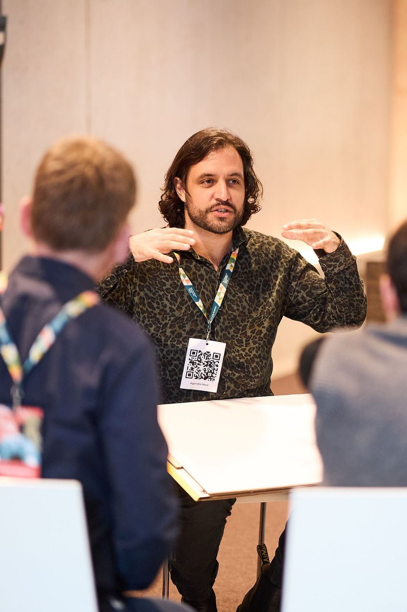
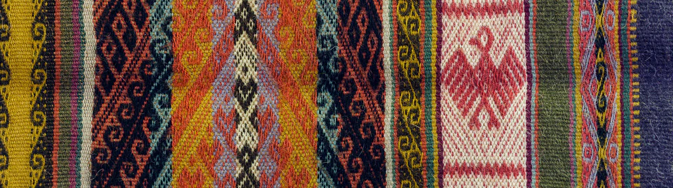

<osi>Facilitator · Coach · Kurator
Oswald H.
König Tafur
Ich öffne Prozesse, Räume und Zukunftsformate. Wo alte, liebgewonnene, verfranste, neu dazugekommene, passende und vergessene neu verknüpft werden können.
Die Stränge
berühren erlaubt
Gerade
Festivalherbst — Zukunftsfestival St. Gallen · in Vorbereitung
<sp_ce> Monbijou · offen für Anfragen
Diese Seite · im Wachsen
